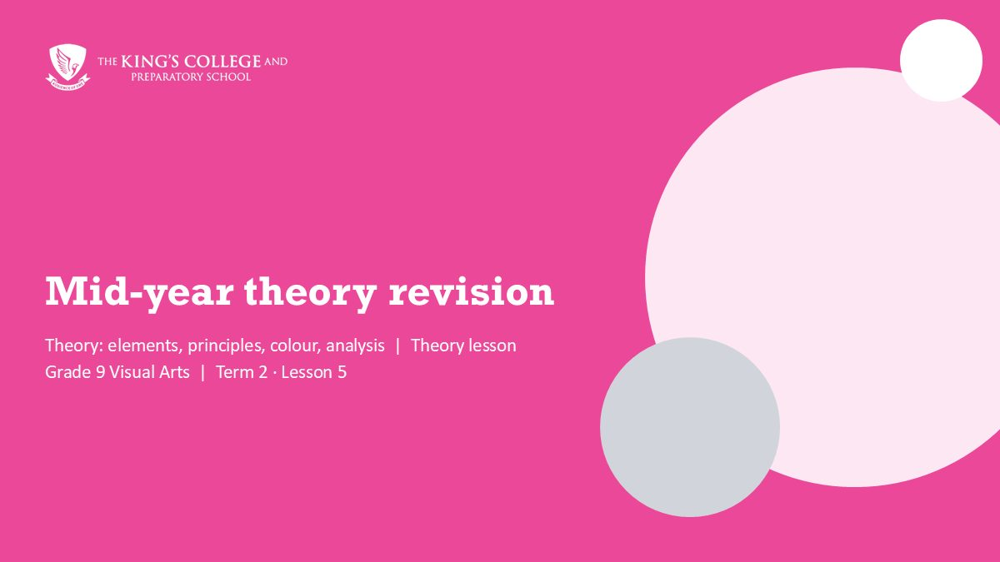

Term 2 · Lesson 5 · Theory lesson: revision
Mid-Year Theory Revision
Start Here
Today I Will
- Know what the mid-year theory exam covers
- Answer exam-style questions using evidence
- Mark my answers with the memo and find my gaps
Which three art words from this year would you least like to be asked to explain in the exam?
Words to Know
| Word | Meaning |
|---|---|
| Principles of design | Pattern, rhythm, emphasis, unity, movement, balance, contrast, proportion and variety. |
| Five levels of visual analysis | First reaction, formal analysis, content, context (zeitgeist), opinion supported by facts. |
| Art movement | A group of artists working at the same time who share similar ideas, aims or styles. |
| Chiaroscuro | Strong contrast between light and shadow that makes forms look three-dimensional. |
| Resistance art | Art made to oppose an unjust system, such as apartheid, and encourage hope and change. |
| Memo | The marking guide that shows the expected answers and how the marks are given. |
Slides

Notes
Revising the principles, five levels, art history and South African art for the mid-year theory exam.
What the Mid-Year Theory Exam Covers
- Vocabulary: Theory, history and practical words from the booklet.
- Principles of design: All nine: name them, define them and find them in an artwork.
- Visual analysis: The five levels, with elements and principles as evidence.
- Art history: The timeline from the Renaissance to today: order, key ideas, one artwork each.
- South African art: Art as a voice during apartheid: Sekoto, community art centres, Muafangejo, Kentridge.
How to Answer Exam Questions
- Read the command word: Name, describe, explain and analyse ask for different amounts of detail.
- Check the marks: Two marks usually means two clear points.
- Give evidence: Say what you see, where it is and what it does.
- Be exact: Spell names and art words correctly and give dates where you can.
Read the command word, count the marks, give the evidence.
Practical
You need: Activity Book, Handbook, memo, coloured pen
Exam-Style Practice Paper
- Revise with the Handbook for the first part of the lesson, using the five cards on the board.
- Close the Handbook and answer the practice paper in the Activity Book in silence.
- Mark your answers with the memo in a coloured pen.
- Write your total at the top and list two topics you will revise before the exam.
Term 3 Assessment issued: 'Relief printmaking explained' (due Term 3, Week 3: Thursday 23 September 2027, as Friday is Heritage Day). Mid-year exams follow: the theory exam (1 hour, 25 marks) and a separate practical exam (90 minutes, 30 marks), a still life of a textured object and a shiny object in charcoal; weighted 50/50.
Test Yourself
- Name the nine principles of design.
- What is the order of the five levels of visual analysis?
- Name one South African artist who used art as a voice during apartheid, and say how.
Show answers
1. Pattern, rhythm, emphasis, unity, movement, balance, contrast, proportion and variety. 2. First reaction, formal analysis, content, context (zeitgeist), opinion supported by facts. 3. For example: Gerard Sekoto painted the daily lives and dignity of black communities; Muafangejo told stories in linocuts; Kentridge's charcoal films deal with apartheid and memory.
Finished Early?
Practise writing short, exact exam answers with evidence.
- Choose any artwork from your timeline cards.
- In your visual journal, write a 2-mark answer: name two principles you can see in it.
- Write a 4-mark answer: explain where one principle is and what effect it has.
- Check your answers against the Handbook and underline every art word you used.